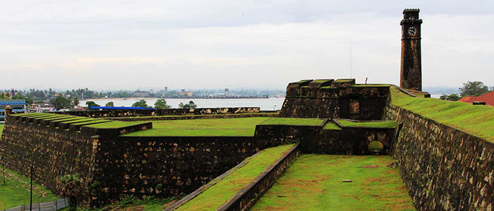
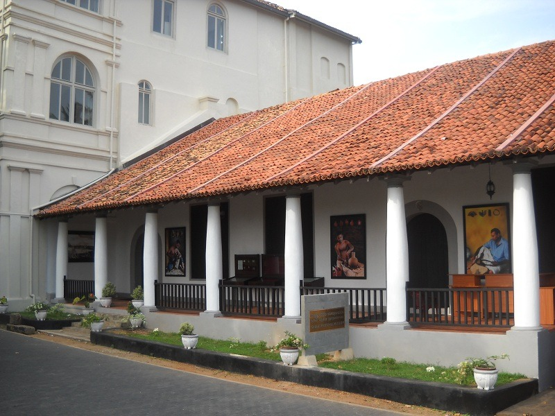
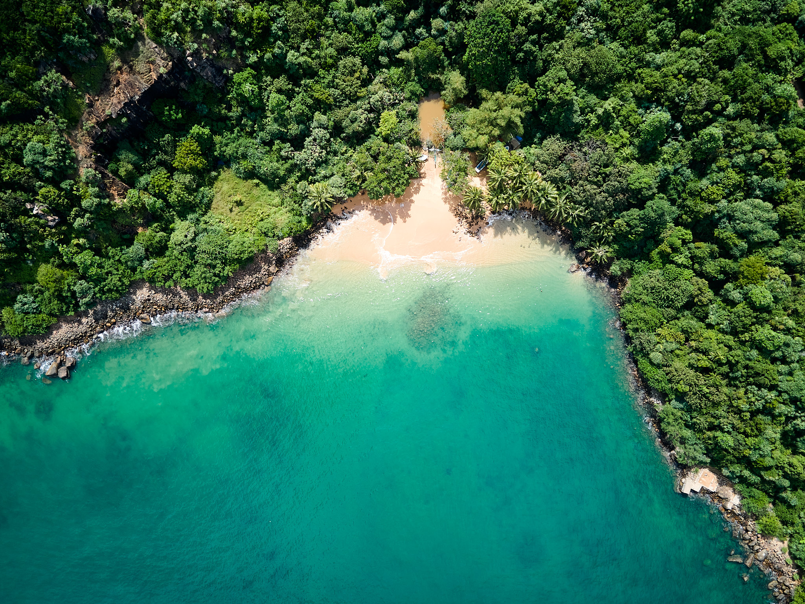
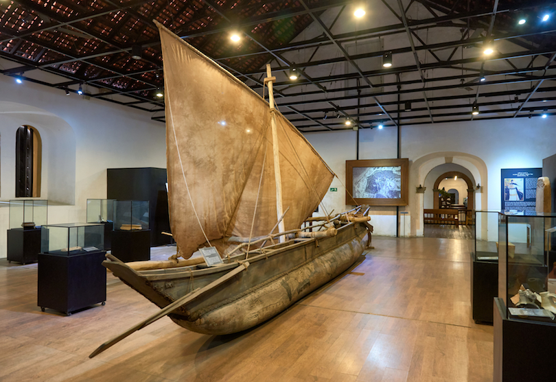
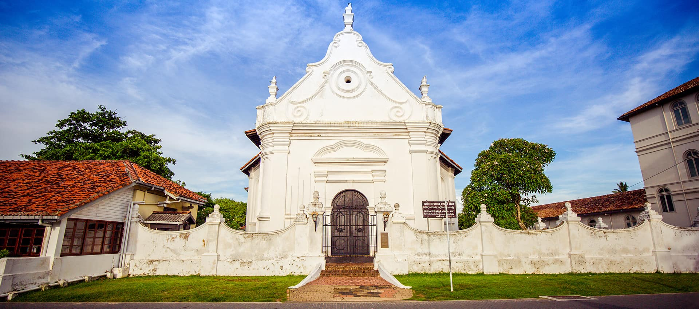

About Galle
Galle is a major city in Sri Lanka, situated on the southwestern tip, 119 kilometres (74 mi) from Colombo. Galle is the provincial capital and largest city of Southern Province, Sri Lanka and is the capital of Galle District. Ibn Batuta, a Moroccan Berber Muslim traveller in the 14th century, referred to it as Qali. Galle reached the height of its development in the 18th century, during the Dutch colonial period. Galle is the best example of a fortified city built by the Portuguese in South and Southeast Asia, showing the interaction between Portuguese architectural styles and native traditions. Galle was known as Gimhathiththa before the arrival of the Portuguese in the 16th century, when it was the main port on the island. See More
History of Galle
The city of Galle has a rich and varied history. It was an important trading port for Arab, Chinese, and European merchants, who brought spices, tea, and other goods to Sri Lanka. In the 16th century, the Portuguese established a fort in Galle to protect their interests, but they were eventually driven out by the Dutch, who expanded and strengthened the fortifications. The Dutch influence is evident in the city's architecture, particularly in the Galle Fort, a UNESCO World Heritage Site.
During the British colonial period, Galle served as the capital of the Southern Province.
Learn More about History
Top Places to Visit in Galle
-
Galle Fort
The Galle Fort is the most iconic attraction in the city. Visitors can walk along the ramparts and enjoy the views of the ocean and the surrounding area. There are also several historic buildings within the fort, including the Dutch Reformed Church and the Galle Lighthouse.
-
Unawatuna Beach

Located just a few kilometers from Galle, Unawatuna Beach is one of the most popular beaches in Sri Lanka. It is known for its clear waters, soft sand, and vibrant coral reefs. Visitors can go swimming, snorkeling, or scuba diving.
-
National Museum of Galle
The National Museum of Galle is housed in a historic building that was once the Dutch governor's residence. It features a collection of artifacts that tell the story of Galle's rich history.
-
Jungle Beach
Jungle Beach is a secluded beach located near Galle. It is surrounded by lush greenery and is a great spot for swimming, snorkeling, and sunbathing. Visitors to Jungle Beach can also explore the nearby mangroves and hike through the jungle.
-
National Maritime Museum
The National Maritime Museum is a fascinating museum that's dedicated to the country's maritime history. The museum features exhibits on shipbuilding, navigation, and marine life.
-
Dutch Reformed Church
The Dutch Reformed Church is a historic church that was built by the Dutch in the 18th century. The church is known for its impressive architecture and stunning interior.